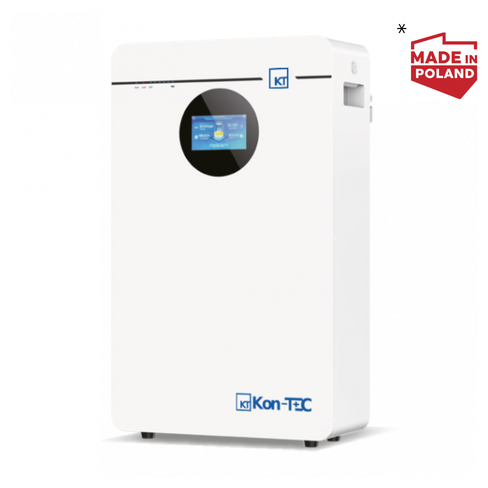

3 396 złDOTACJI

MAGAZYN ENERGII · LV · LiFePO4
Kon-TEC MANA 10,49 kWh
10,49 kWhpojemność
LVnapięcie
10 latgwarancja
Cena magazynu6 820 zł
Magazyn6 820 zł
Montaż standardowy DC4 500 zł
Sterownik EMS (cena przykł.)1 500 zł
Razem12 820 zł
Sprawdzimy, czy Twój falownik ma EMS zgodny z programem. Cena sterownika jest przykładowa.
Dotację PME 2 możesz dostać: −3 396 zł, dla paneli do 5,2 kWpPłacisz całość przy zamówieniu, dotację możesz odzyskać po wniosku, jeśli spełnisz warunki i starczy budżetu.
Falownik z pracą wyspową:
Dodaj do koszyka · 6 820 złDodaj zestaw do koszyka · 12 820 złSkompletuj zestaw · 12 820 zł
 123
123